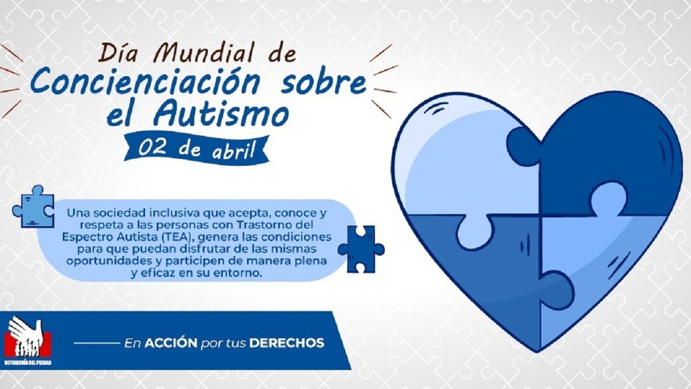

Número de niños con autismo en el Perú
- Hasta marzo del 2019, en el Perú, 15 625 personas padecen TEA. De esta cifra el 90.6% corresponde a menores de 11 años.
- En abri del 2019, 4806 estudiantes con autismo se encuentran matriculados en escuelas públicas. En el sector privado, este número disminuye hasta los 2614 estudiantes.
- En el Perú habría alrededor de 204 818 personas con Trastornos del espectro autista. En tal sentido, solo se habría certificado al 2,6 % de personas con TEA en el país, es decir habría más de un 97 % de personas autistas que no están diagnosticadas.
